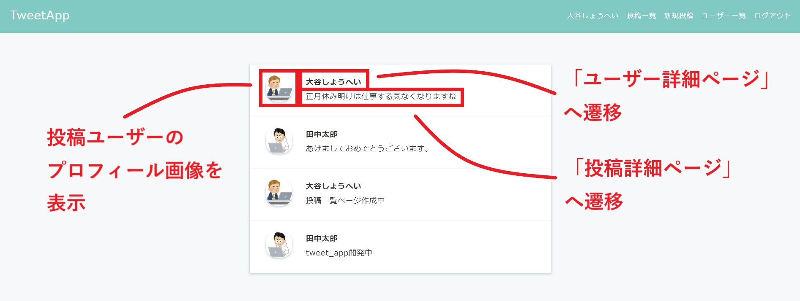
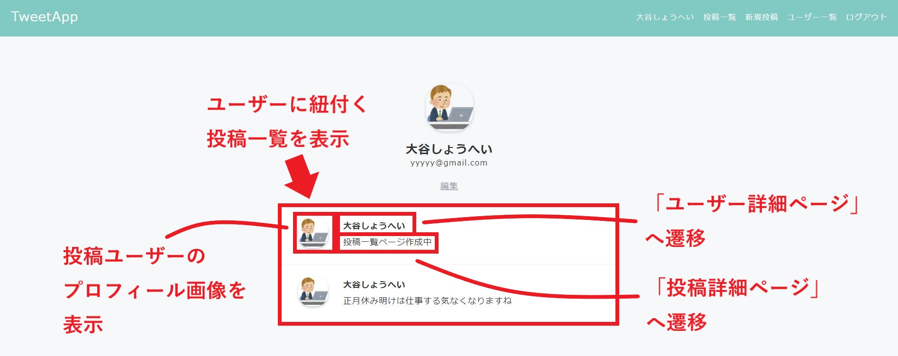
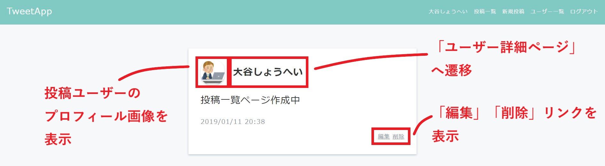
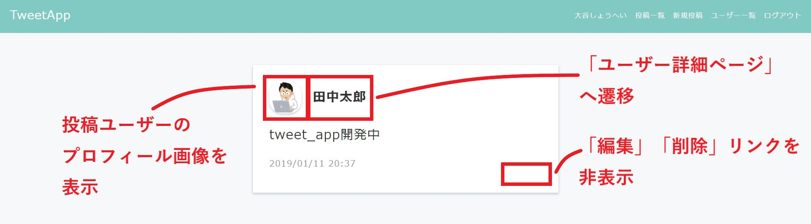

投稿ユーザーマッピング機能
制作イメージ
投稿とユーザーのマッピング機能を作成してください。
1. 投稿一覧ページ

2. ユーザー詳細ページ

3. 投稿詳細ページ
3-1. ログインユーザーの投稿

3-2. ログインユーザー以外の投稿

【カラム追加】
◆Postテーブルに下記カラムを追加してください。
・マイグレーションファイル名：add_user_id_to_posts
・カラム名：user_id
・データ型：integer
◆Postモデルにバリデーションを追加し、下記に該当する場合は投稿内容をデータベースに保存せずにエラーメッセージを表示するようにしてください。
・ユーザーIDが空の場合
【新規投稿とログインユーザーの紐付け】
◆新規投稿時、ログインユーザーのidをPostテーブルに保存するようにしてください。
◆投稿詳細ページへの修正
・Postモデルに、投稿に紐付くユーザー情報を呼び出すためのインスタンスメソッドを定義してください。
・下記ダウンロードファイルの【posts】show.htmlのソースを、/posts/show.html.erbの<div class="posts-show-item">の直後に貼り付けてください。
・投稿詳細ページに「投稿ユーザーのプロフィール画像」と「ユーザー名」が表示されるようにしてください。
・「ユーザー名」をクリックすると、ユーザー詳細ページへ遷移するようにしてください。
◆投稿一覧ページへの修正
・/posts/index.html.erbの<div class="posts-index-item"></div>の間のソースを全削除し、下記ダウンロードファイルの【posts】index.htmlのソースを貼り付けてください。
・投稿一覧ページに「投稿ユーザーのプロフィール画像」と「ユーザー名」が表示されるようにしてください。
・「ユーザー名」をクリックすると、ユーザー詳細ページへ遷移するようにしてください。
◆ユーザー詳細ページへの修正
・Userモデルに、whereメソッドを利用して、ログインユーザーに紐付く全ての投稿を呼び出すためのインスタンスメソッドを定義してください。
・下記ダウンロードファイルの【users】show.htmlのソースを、/users/show.html.erbの<div class="user">閉じタグの直後に貼り付けてください。その後、/posts/index.html.erbのeach文の中のコードをコピーし、/users/show.html.erbのeach文の中に貼り付けてください。
【投稿内容の編集及び削除の制御】
◆投稿詳細ページで、ログインユーザーの投稿以外の場合には、編集及び削除リンクを表示しないようにしてください。
◆ログインユーザーの投稿以外の場合には、URLを直接入力してもアクセスできないようにしてください。
◆アクセス制御メッセージは、下記の通りにしてください。
・権限がありません
・HTMLダウンロード